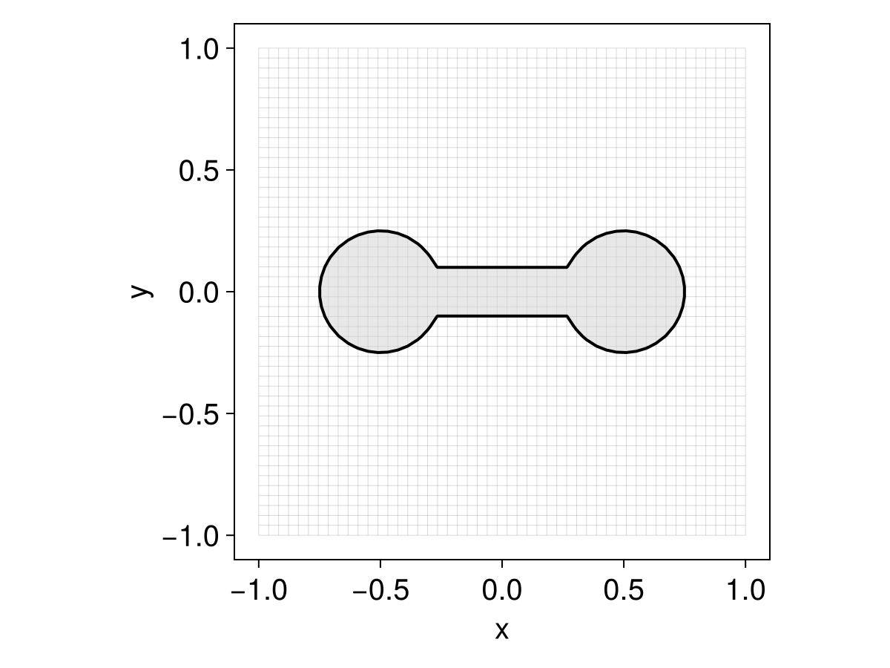
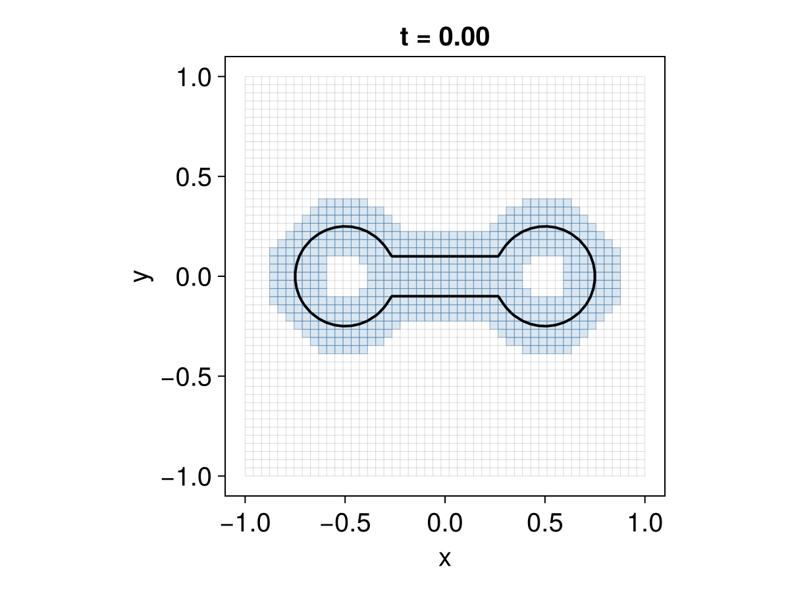

LevelSetMethods
LevelSetMethods.jl is a Julia package for representing and evolving implicitly defined domains in $\mathbb{R}^d$. Rather than tracking the boundary of a domain $\Omega$ directly, it represents $\Omega$ as the sub-zero region of a scalar level-set function $\phi$,
\[\Omega = \left\{\boldsymbol{x} \in \mathbb{R}^d : \phi(\boldsymbol{x}) < 0 \right\},\]
with the interface $\partial\Omega$ recovered as the zero contour $\{\phi = 0\}$. Moving the interface then amounts to evolving $\phi$ under a partial differential equation. Because the interface is never meshed or tracked explicitly, topological changes — merging, splitting, pinching off — happen automatically, which is the central appeal of the level-set method.
Installation
To install the library, run the following command on a Julia REPL:
using Pkg; Pkg.add("LevelSetMethods")This will install the latest tagged version of the package and its dependencies.
For visualization, you may also want to install a Makie backend: CairoMakie is a good default for 2D figures and animations, while GLMakie is needed for the 3D isosurface plots.
Overview
This package defines a LevelSetEquation type that can be used to solve partial differential equations of the form
\[\phi_t + \underbrace{\boldsymbol{u} \cdot \nabla \phi}_{\substack{\text{advection} \\ \text{term}}} + \underbrace{v |\nabla \phi|}_{\substack{\text{normal} \\ \text{term}}} + \underbrace{b \kappa |\nabla \phi|}_{\substack{\text{curvature} \\ \text{term}}} + \underbrace{\text{sign}(\phi)(|\nabla \phi| - 1)}_{\substack{\text{reinitialization}\\ \text{term}}} = 0\]
where
- $\phi : \mathbb{R}^d \times \mathbb{R}^+ \to \mathbb{R}$ is the level set function
- $\boldsymbol{u} :\mathbb{R}^d \times \mathbb{R}^+ \to \mathbb{R}^d$ is a given (external) velocity field
- $v : \mathbb{R}^d \times \mathbb{R}^+ \to \mathbb{R}$ is a normal speed
- $b : \mathbb{R}^d \times \mathbb{R}^+ \to \mathbb{R}$ is a function that multiplies the curvature $\kappa = \nabla \cdot (\nabla \phi / |\nabla \phi|)$
Here is how it looks in practice. We rotate a dumbbell — assembled from two disks and a bar with the set operations of the geometry page — about the origin:
using LevelSetMethods
grid = CartesianGrid((-1, -1), (1, 1), (50, 50))
disk(c) = MeshField(x -> hypot((x .- c)...) - 0.25, grid)
bar = MeshField(x -> maximum(abs.(x) .- (1.0, 0.2) ./ 2), grid)
ϕ = disk((-0.5, 0.0)) ∪ disk((0.5, 0.0)) ∪ bar
𝐮 = (x, t) -> (-x[2], x[1])
eq = LevelSetEquation(; terms = (AdvectionTerm(𝐮),), ic = ϕ, bc = NeumannBC())LevelSetEquation
├─ equation: ϕₜ + 𝐮 ⋅ ∇ ϕ = 0
├─ time: 0.0
├─ integrator: RK2 (2nd order TVD Runge-Kutta, Heun's method)
│ └─ cfl: 0.5
├─ state: MeshField on CartesianGrid in ℝ²
│ ├─ domain: [-1.0, 1.0] × [-1.0, 1.0]
│ ├─ nodes: 50 × 50
│ ├─ spacing: h = (0.04082, 0.04082)
│ ├─ bc: Neumann (all)
│ ├─ valtype: Float64
│ └─ values: min = -0.2272, max = 0.868
╰─Loading a Makie backend lets you plot the equation with plot:
using CairoMakie # loads the MakieExt from LevelSetMethods
LevelSetMethods.set_makie_theme!() # optional theme customization
plot(eq)
integrate! advances the equation in place. Calling it repeatedly at increasing times is the idiom behind animations; we wrap that loop in a small helper that writes the current current_time into the axis title. The recipe only draws the state — Makie recipes cannot set the axis title — so the title is the caller's job; we format it with a fixed two decimals (@sprintf) so its width stays constant and the label does not flicker:
using Printf
function animate(eq, filename; tf = π)
obs = Observable(eq)
fig = Figure()
ax = Axis(fig[1, 1])
plot!(ax, obs)
on(obs) do e
ax.title = @sprintf("t = %.2f", current_time(e))
end
record(fig, joinpath(@__DIR__, filename), range(0, tf; step = 1 / 30)) do t
integrate!(eq, t)
obs[] = eq
end
return nothing
end
animate(eq, "ls_intro.gif")
Note that ic is copied into the equation, so the field ϕ you passed in is left untouched — the evolving state lives in current_state.
Curvature, normals, and narrow bands all behave best when $\phi$ is a signed distance function ($|\nabla\phi| = 1$), a property advection steadily distorts. The usual remedy is to reinitialize between steps by passing a posthook to integrate!:
integrate!(eq, tf; posthook = eq -> reinitialize!(current_state(eq)))A PDE-based EikonalReinitializationTerm is also available. See Reinitialization for the trade-offs and details.
That same equation runs unchanged on a narrow band. Because the interface fills only a thin region of the domain, storing $\phi$ at every grid node is wasteful — especially in 3D. A NarrowBandMeshField keeps values only on a band of nodes around the interface, and is a drop-in replacement for a MeshField: swap it in as the initial condition and everything else — the terms, the boundary conditions, even the animate call above — stays exactly the same.
nb = NarrowBandMeshField(disk((-0.5, 0.0)) ∪ disk((0.5, 0.0)) ∪ bar; nlayers = 3)
eq_band = LevelSetEquation(; terms = (AdvectionTerm(𝐮),), ic = nb, bc = NeumannBC())
animate(eq_band, "ls_intro_band.gif")
The recipe shades the active band cells, which travel along with the interface; only those nodes are stored and advanced, so the cost scales with the size of the interface rather than the grid — a substantial saving in 3D. See Narrow-band fields for details.
There is an almost one-to-one correspondence between each of the LevelSetTerms described above and individual chapters of the book by Osher and Fedkiw on level set methods [1], so users interested in digging deeper into the theory/algorithms are encouraged to consult that reference. We also drew some inspiration from the great Matlab library ToolboxLS by Ian Mitchell [2].
Extensions
Some features of LevelSetMethods.jl are only available through extensions after loading certain optional dependencies:
- Makie: Loading a
Makiebackend (likeGLMakieorCairoMakie) enables plotting recipes for level sets and equations. See Makie extension. - MMG: Loading
MMG_jllandMarchingCubesenables exporting level sets as volume or surface meshes. See MMG extension. - ImplicitIntegration: Loading
ImplicitIntegrationenables high-order quadratures over the implicit domain and its interface. See ImplicitIntegration extension.
Going further
The LevelSetEquation type seen above is the heart of the package, and the rest of the manual is organized around it; its docstrings are worth reading in detail.
The remaining documentation is grouped in the navigation sidebar:
- Building & solving covers each ingredient of an equation — grids and fields, level sets, terms, time integrators, boundary conditions — one page apiece.
- Advanced topics goes beyond the basics.
- Extensions documents the optional features behind extra dependencies (see Extensions above).
- Examples works through complete applications end to end.
Every exported name is documented in the Reference.